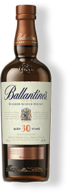
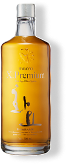

따스함에서 서늘함으로 건너가는 시간
보틀노트에서 가장 많이 찾아본 위스키예요.
싱글몰트
CLYNELISH 14YO (OLD PACKAGING)
SPRINGBANK 10YO
YAMAZAKI PEATED MALT SPANISH OAK
블렌디드
MATSUI TOTTORI BLENDED WHISKY
아메리칸(버번)
E.H. TAYLOR SMALL BATCH
취향에 맞는 한 병을 찾아보세요.
Single malt
Blended malt
Blended

America (Bourbon)
Rye
Other

말린 꽃과 꿀의 향이 먼저 느껴지고, 끝에는 짭조름한 여운이 남아요.
오크와 바닐라가 부드럽게 이어지는 한 잔. 천천히 마시니 향이 더 풍부해졌어요.


 오크향기
오크향기